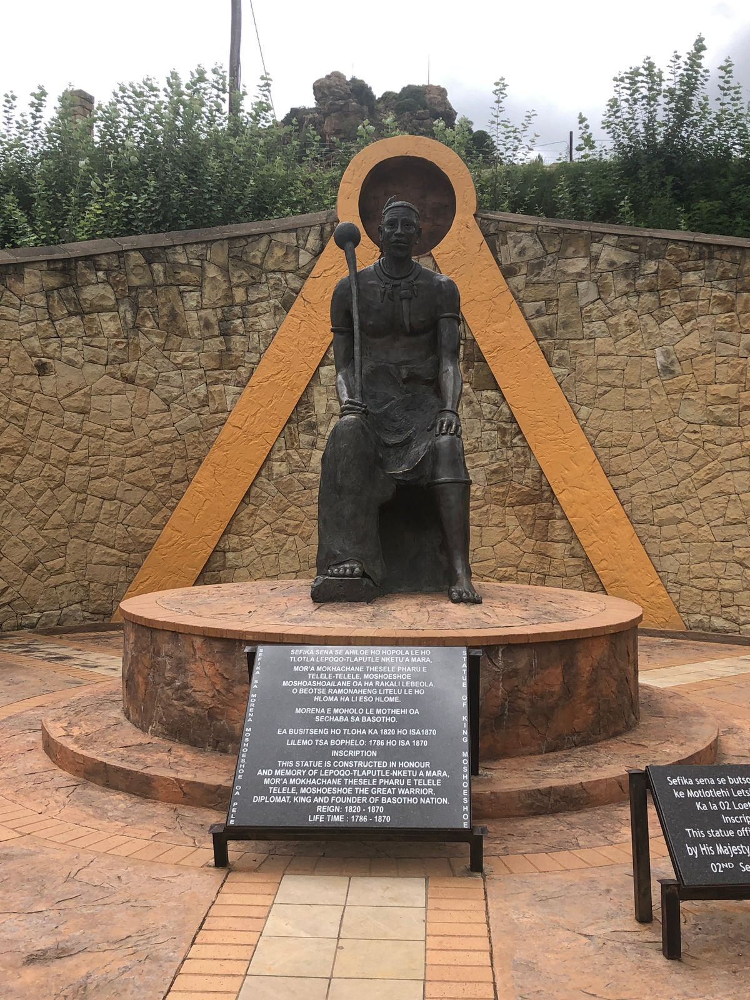
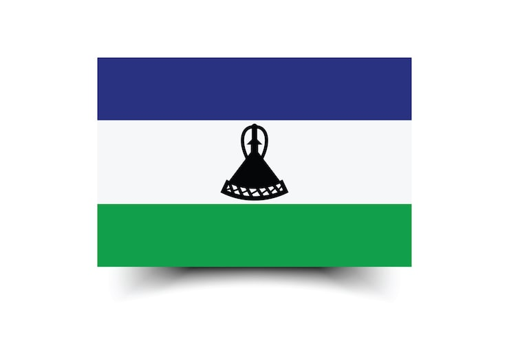
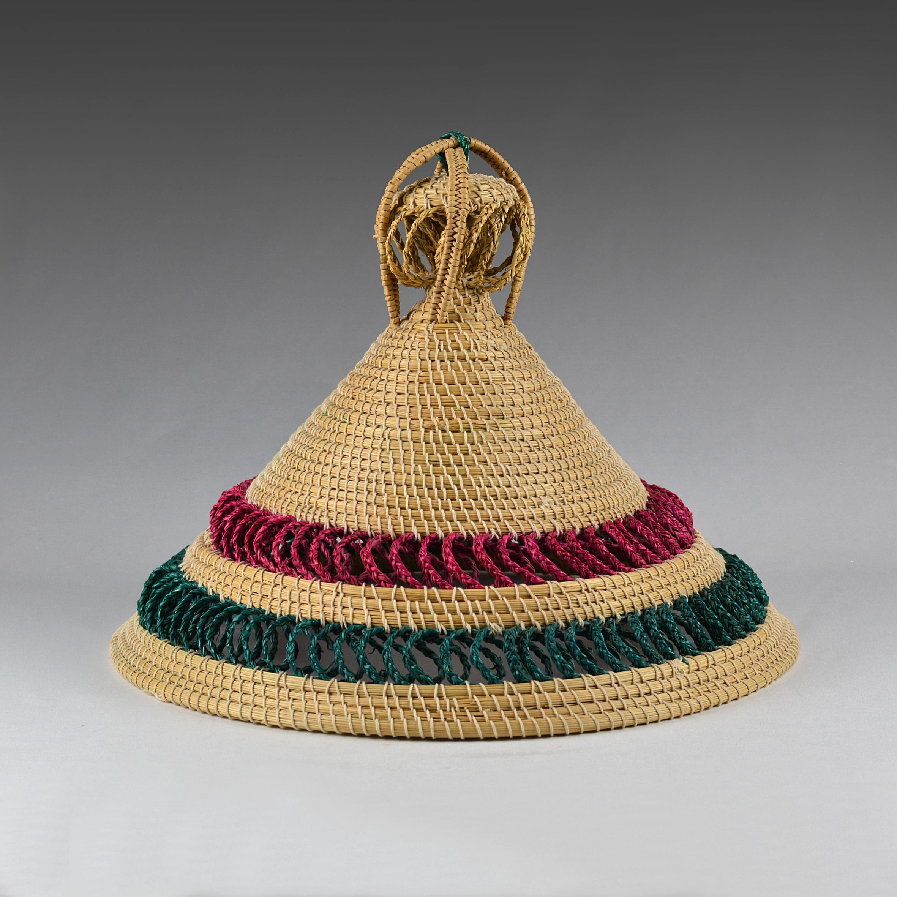
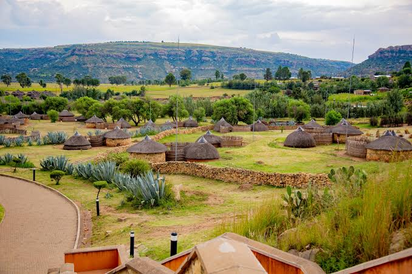

Overview of the Event
Join us for a vibrant celebration of Basotho culture, where tradition and community come alive in a colorful and unforgettable experience. Immerse yourself in the rich heritage of Lesotho through captivating music and energetic traditional dances. Savor the taste of authentic Basotho cuisine, freshly prepared to delight your senses. Discover unique crafts, attire, and storytelling that reflect the spirit of the Basotho people. Enjoy live performances that showcase the rhythm and soul of our cultural identity. Bring your friends and family to share in this joyful and welcoming atmosphere. Celebrate unity, pride, and the beauty of tradition with us. Don’t miss this special event filled with culture, music, food, and lasting memories!
Date
25 December 2026
Location
Thaba-Bosiu Cultural Village, Maseru, Lesotho